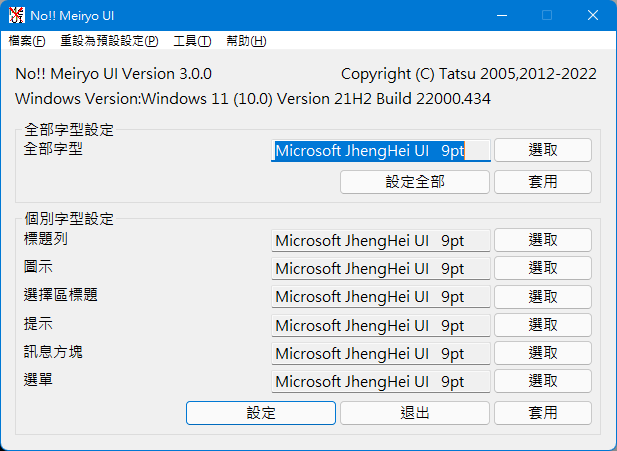
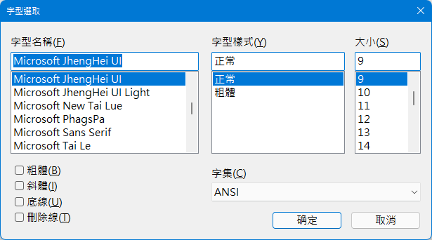

在檔案總管中按兩下 noMeiryoUI.exe 的圖示 即可啟動軟體。
啟動後將會顯示如下介面。
目前的 Windows 版本資訊將以系統名稱（組建號碼）顯示在主介面上方。若您需要向作者回報問題或錯誤，可一併附上此資訊。

主介面顯示後，目前的系統各部分所使用的字型名稱也會一併列出。
上方「全部字型設定」群組可用於將選定的字型一次套用至下方所有系統介面項目。
「全部字型」右側的文字方塊中顯示目前選取的字型。
按下該欄右側的「選取」按鈕後，即可從彈出的字型選取對話方塊中選擇字型。
點選「套用全部並結束」即可將所有系統介面字型、大小與樣式一併變更並關閉程式。
點選「套用」則會在套用變更後繼續保留程式視窗。
下方「個別字型設定」群組可用於對系統介面的各個項目單獨指定字型。
若要變更特定項目之字型，請點選該項目右側的「選取」按鈕。
在彈出的字型選取對話方塊中選擇您偏好的字型、大小與樣式。
設定完成後，點選「套用並結束」可將字型套用至系統並關閉程式。
點選「套用」可套用至系統而不關閉程式。
點選「結束而不套用」可直接結束程式。
按下「選取」按鈕後，軟體將會彈出如下的字型選取對話方塊：

透過字型選取對話方塊可進行下列設定：
| 名稱 | 功能 |
|---|---|
| 字型名稱(F) | 選取字型。 |
| 字型樣式(Y) | 指定字型的字形樣式。 |
| 大小(S) | 指定字型大小（pt）。 |
| 粗體(B) | 勾選此項目以粗體顯示。 |
| 斜體(I) | 勾選此項目以斜體顯示。 |
| 底線(U) | 勾選此項目以加上底線。 |
| 刪除線(T) | 勾選此項目以加上刪除線。 |
| 字元集(C) | 選取字型的字元集編碼。 |
選取完畢後按一下「確定」按鈕即可套用該字型設定。
若有未選取的必要項目，軟體將會顯示警告，屆時請依提示操作。
透過命令列參數，可在啟動時自動載入指定的設定檔，或直接在背景套用字型設定。
命令列格式如下：
noMeiryoUI [字型設定檔路徑] [選項...]
若檔案名稱或路徑中包含空格，請使用半形雙引號 "" 包裹。
使用多個選項時請以半形空格分隔。
在 [選項...] 中可使用下列參數：
noMeiryoUI MySet.ini
noMeiryoUI "Your Settings.ini" -set
noMeiryoUI "restore Settings.ini" -set -delay 60